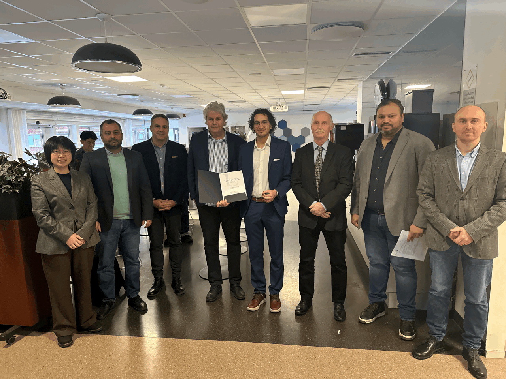
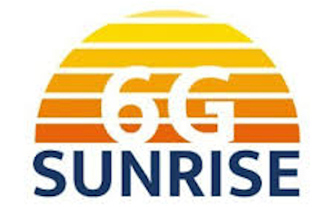
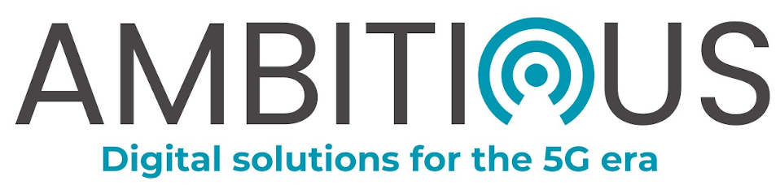

A new chapter begins — I joined Ericsson Research in Stockholm as an Experienced Researcher.
Read moreOn December 8th 2025, I officially started my position as Experienced Researcher at Ericsson Research, Stockholm, Sweden, within the Cyber Physical Systems group. My work focuses on the co-design of communication, control, and computation for connected mobile robots, UAVs, autonomous vehicles, and industrial process control systems. This marks an exciting new chapter after completing my Ph.D. at Luleå University of Technology.
I successfully defended my Ph.D. thesis at Luleå University of Technology.
Read moreOn December 1st 2025, I defended my Ph.D. thesis entitled "Towards the Next Generation Robotic Autonomy on the Edge: Scalability, Resiliency, and Dynamic Resource Allocation" at Luleå University of Technology. The defense marked the culmination of more than four years of research at the intersection of robotics, edge computing, and networked control systems, supervised by Professor George Nikolakopoulos.

Attended a SUNRISE-6G project meeting and review as part of the EU Horizon project activities.
Read moreIn September 2025, I participated in a SUNRISE-6G project meeting and review. SUNRISE-6G is an EU Horizon project focused on reconfigurable 6G Quality of Service (QoS) and edge integration for robotics and automation. As team lead at LTU, I contributed to the project's research activities and reporting.

Presented a paper on dynamic computational resource allocation at ECC 2025 in Thessaloniki, Greece.
Read moreIn June 2025, I travelled to Thessaloniki, Greece, to attend the 23rd European Control Conference (ECC) and present "Dynamic Computational Resource Allocation for Ensuring Stability of Remote Edge-Based Controlled Multi-Agent Systems". The paper proposes a novel edge-based architecture for dynamically allocating resources to edge-offloaded controllers for multi-agent systems, enabled through a Kubernetes cluster and experimentally evaluated. DOI: 10.23919/ECC65951.2025.11187111.
Visited Epiroc's Automation Lab in Örebro to explore dynamic resource allocation for edge-enabled autonomous mining machines.
Read moreDuring June 9–13, 2025, I visited Epiroc's Automation Lab in Örebro, Sweden. The visit focused on facilitating research directions regarding dynamic resource allocation for edge-enabled autonomous drilling and mining machines, bridging my Ph.D. research with industrial applications in the mining sector.
Co-organised and gave a keynote at the RISE Workshop co-located with CCGrid 2025 in Tromsø, Norway.
Read moreIn May 2025, I travelled to Tromsø, Norway, to co-organise and present at the RISE (Robotic Systems in the Edge-Cloud Continuum) full-day workshop, co-located with CCGrid 2025. I delivered a keynote entitled "Enabling 5G/Edge Connected Robots within Subterranean Environments", sharing our latest results on edge-enabled robotic systems for underground mining and infrastructure inspection.
Attended the 3rd plenary meeting of the SUNRISE-6G EU Horizon project.
Read moreI attended the 3rd Plenary Meeting of SUNRISE-6G during May 14–18, 2025. The meeting brought together all project partners to review progress, align on upcoming milestones, and coordinate technical activities across work packages. As team lead for the LTU contribution, I presented research progress and upcoming deliverables.
Key milestone activities and live demonstrations at Eighth Dimension GmbH in Munich.
Read moreDuring April 30 – May 3, 2025, we conducted key milestone activities and live demonstrations at Eighth Dimension GmbH, Munich. As CTO and co-founder, I led the technical preparation and execution of the demonstrations, showcasing our autonomous aerial system capabilities including real-time object detection, tracking, and edge-offloaded AI planning.
Conducted experimental trials for the AMBITIOUS EU Horizon project at LTU.
Read moreIn April 2025, I led an experimental campaign for the AMBITIOUS EU Horizon project. The experiments validated our edge-enabled multi-agent robotic control architecture under real-world conditions, testing scalability and resilience of the proposed resource allocation framework with multiple autonomous mobile robots.

Attended a SUNRISE-6G consortium meeting in February 2025.
Read moreIn February 2025, I attended a SUNRISE-6G consortium meeting. The meeting covered technical progress across all work packages, with a focus on 6G-enabled robotic systems and edge integration. I presented the LTU team's contributions and coordinated activities for upcoming experimental campaigns.